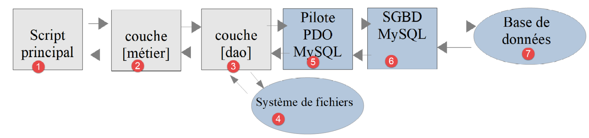

14. Exercice d'application – version 6
Nous venons d'implémenter la structure en couches suivante :

Le SGBD utilisé dans les exemples était MySQL. Au chapitre précédent, nous avions remarqué que rien dans les classes implémentant la couche [dao] ne laissait supposer qu'on utilisait un SGBD particulier. C'est ce que nous allons vérifier maintenant en utilisant un autre SGBD, le SGBD PostgreSQL. L'architecture en couches devient la suivante :

La version 6 ne contient aucune nouvelle classe : elle utilise les classes de la version 5. Elle ne contient que des fichiers de données et de nouveaux scripts principaux :
14.1. Installation du SGBD PostgreSQL
Le cours PHP 7 téléchargeait l'installateur de PostgreSQL pour Windows sur le site https://www.postgresql.org/download/, l'exécutait, puis transformait le service Windows de PostgreSQL, lancé automatiquement au démarrage de la machine, en service à démarrage manuel. Avec [Laragon], c'est plus simple. PostgreSQL n'est pas installé d'office, mais [Laragon] sait l'ajouter lui-même :
- clic droit dans la fenêtre de [Laragon] (ou sur son icône dans la barre des tâches) pour ouvrir son menu ;
- menu [Outils > Ajout rapide] (Tools > Quick add). La liste propose des logiciels que [Laragon] sait télécharger et installer, parmi lesquels une ou plusieurs versions de PostgreSQL, par exemple [postgresql-17] ;
- un clic sur la version voulue lance le téléchargement et l'installation. PostgreSQL est installé dans le dossier [<laragon>/bin/postgresql] et ses données dans le dossier [<laragon>/data/postgresql-NN] ;
- le bouton [Démarrer tout] lance désormais PostgreSQL avec Apache et MySQL. La fenêtre de [Laragon] indique qu'il écoute sur le port 5432, son port par défaut .
Si la version de PostgreSQL souhaitée n'est pas proposée, on peut l'ajouter à la liste : le menu [Outils > Ajout rapide > Configuration] ouvre le fichier [<laragon>/usr/packages.conf] qui associe à chaque logiciel l'adresse de son archive. On y ajoute (ou modifie) une ligne de la forme [postgresql-17=<adresse de l'archive zip>], l'archive étant celle des « binaires » de PostgreSQL pour Windows proposée par la société EDB (lien « zip archive » de la page https://www.enterprisedb.com/download-postgresql-binaries). On peut aussi, sans passer par ce menu, décompresser soi-même cette archive dans un sous-dossier de [<laragon>/bin/postgresql] : [Laragon] la trouve à son prochain démarrage, et la version utilisée se choisit dans le menu [PostgreSQL > Version].
PostgreSQL n'est utilisé que par ce chapitre et le suivant. Il ne fonctionne que lorsque [Laragon] est démarré, et on peut l'arrêter depuis le menu [PostgreSQL] de [Laragon].
Comme MySQL, PostgreSQL a un administrateur, le super-utilisateur [postgres]. Dans l'installation faite par [Laragon], il n'a normalement pas de mot de passe. Si un mot de passe lui a été donné, les outils le demanderont.
Le terminal de [Laragon] donne accès au client en ligne de commande de PostgreSQL, [psql], l'équivalent du client [mysql]. Le menu [PostgreSQL] de [Laragon] propose aussi l'outil graphique [pgAdmin] lorsqu'il est installé. La documentation de PostgreSQL est disponible à l'adresse https://www.postgresql.org/docs/.
14.2. Activation de l'extension PDO du SGBD PostgreSQL
Le pilote PDO de PostgreSQL est l'extension [pdo_pgsql] de PHP. On l'active comme nous l'avons fait pour le pilote MySQL :
- soit dans le menu de [Laragon] : PHP / Extensions / pdo_pgsql ;
- soit en vérifiant que la ligne suivante n'est pas mise en commentaire (pas de point-virgule en début de ligne) dans le fichier [php.ini] (menu PHP / php.ini de [Laragon]) :
Après avoir sauvegardé la modification, on relance les services de [Laragon] (bouton [Recharger]). On vérifie ensuite la présence du pilote avec le script [pdo-drivers.php] du chapitre sur MySQL, exécuté dans le dossier [scripts-console/mysql] :
Le pilote [pgsql] fait partie des pilotes disponibles.
14.3. Création de la base [dbimpots-2019]
Avec PostgreSQL, nous allons créer :
- un utilisateur [admimpots] avec le mot de passe [mdpimpots] ;
- une base [dbimpots-2019] dont il sera le propriétaire ;
- dans cette base, les tables [tbtranches] et [tbconstantes] .
Le cours PHP 7 faisait ce travail avec l'outil d'administration [pgAdmin], une application web à installer en plus du SGBD. Comme pour MySQL, nous écrivons plutôt un script SQL [Data/postgres-dbimpots-2019.sql] :
Commentaires
- lignes 7-8 : on supprime la base et l'utilisateur s'ils existent, pour pouvoir réexécuter le script. Avec PostgreSQL, un nom qui contient un tiret est entouré de guillemets, et non d'apostrophes inversées comme avec MySQL : c'est une première différence entre les deux SGBD ;
- ligne 9 : PostgreSQL appelle « rôles » ses utilisateurs. L'attribut [LOGIN] autorise le rôle [admimpots] à se connecter au SGBD ;
- ligne 10 : création de la base [dbimpots-2019]. Son propriétaire est [admimpots], ce qui lui donne tous les droits sur elle. Le codage des caractères est UTF-8. La base est construite à partir de la base modèle [template0], qui accepte n'importe quel codage ;
- ligne 13 : cette ligne n'est pas un ordre SQL mais une commande du client [psql] (elle commence par une barre oblique inversée). Elle connecte le client à la base [dbimpots-2019] qui vient d'être créée. Avec PostgreSQL, il n'y a pas d'équivalent de l'ordre [USE] de MySQL : une connexion travaille sur une seule base ;
- ligne 16 : les ordres suivants sont exécutés avec l'identité de [admimpots], qui sera ainsi le propriétaire des tables créées ;
- lignes 19-25 : la table [tbtranches]. La clé primaire [id] est de type [INTEGER GENERATED ALWAYS AS IDENTITY] : c'est le SGBD qui génère ses valeurs lors des insertions, comme le faisait l'attribut [AUTO_INCREMENT] de MySQL. Cette syntaxe est celle de la norme SQL ; [AUTO_INCREMENT] est propre à MySQL. Le type [NUMERIC] est l'équivalent du type [DECIMAL] de MySQL ;
- lignes 28-41 : la table [tbconstantes]. Les noms des colonnes sont écrits en minuscules, les mots étant séparés par des soulignés (plafond_qf_demi_part) .
Pourquoi ces noms de colonnes ? Une particularité de PostgreSQL est que les noms de colonnes peuvent être sensibles à la casse (majuscules / minuscules), ce qui n'est habituellement pas le cas avec les autres SGBD. Ainsi avec MySQL, l'ordre [select limites, coeffR, coeffN from tbtranches] fonctionne même si les colonnes réelles de la table [tbtranches] sont [LIMITES, COEFFR, COEFFN]. Avec PostgreSQL, il ne fonctionne pas, car PostgreSQL convertit en minuscules les noms qui ne sont pas entourés de guillemets : il exécute en réalité l'ordre [select limites, coeffr, coeffn from tbtranches]. Pour qu'il ne fasse pas cela, il faut écrire [select "LIMITES", "COEFFR", "COEFFN" from tbtranches], c'est-à-dire protéger les noms des colonnes avec des guillemets. Pour ces raisons, nous donnons aux colonnes des noms en minuscules, et nous ne pouvons pas reprendre les noms en camelCase (plafondQfDemiPart) de la base MySQL. Les noms des objets d'une base de données peuvent être une source d'incompatibilité entre SGBD, certains noms étant des mots réservés dans certains SGBD et pas dans d'autres.
Ce script doit être exécuté par le super-utilisateur [postgres]. Dans le terminal de [Laragon] ouvert dans le dossier [version-06/Data], on tape la commande suivante (l'option [-U] donne le nom de l'utilisateur, l'option [-f] le fichier à exécuter) :
- lignes 2 et 4 : les avertissements (NOTICE) des ordres [DROP ... IF EXISTS] lors de la première exécution : la base et le rôle n'existaient pas ;
- les autres lignes sont les comptes rendus des ordres exécutés .
On vérifie le résultat en se connectant à la base sous l'identité de [admimpots]. L'option [-h localhost] impose une connexion réseau à la machine locale, comme le fera PHP. [psql] demande alors le mot de passe de [admimpots], sauf si le serveur fait confiance aux connexions locales (cf. le paragraphe sur les tests, plus loin). L'option [-c] passe une commande à exécuter ; la commande [psql] [\dt] liste les tables de la base :
et la commande [\d tbtranches] affiche la structure de la table [tbtranches] :
- ligne 5 : la clé primaire [id], générée par le SGBD (generated always as identity) ;
- lignes 9-10 : l'index de la clé primaire .
On peut également administrer PostgreSQL graphiquement. L'outil [HeidiSQL] fourni avec [Laragon] sait se connecter à un serveur PostgreSQL (type de réseau « PostgreSQL (TCP/IP) », port 5432). L'outil [pgAdmin] du cours PHP 7 est lui aussi utilisable ([https://www.pgadmin.org/]).
14.4. Remplissage de la base [dbimpots-2019]
Nous avons déjà fait ce travail avec le SGBD MySQL dans la version 5. Il nous suffit de modifier le fichier [database.json] qui décrit la base de données. Le fichier [version-06/Data/database.json] est le suivant :
- ligne 2 : le DSN a changé : le préfixe [pgsql] indique qu'on a affaire au SGBD PostgreSQL. Le port n'est pas précisé : c'est le port par défaut de PostgreSQL, 5432 ;
- ligne 5 et ligne 10 : on a précédé le nom des tables par le nom du schéma auquel elles appartiennent, [public]. Une base PostgreSQL peut contenir plusieurs schémas, qui sont des espaces de noms pour les tables. Ce n'était pas indispensable puisque [public] est le schéma utilisé par défaut lorsqu'aucun schéma n'est précisé dans le nom de la table ;
- lignes 11-20 : les noms des colonnes de la table des constantes ont changé .
Le script [Main/MainTransferAdminDataFromJsonFile2PostgresDatabase.php] de remplissage de la base [dbimpots-2019] est le suivant :
Commentaires
Seules les lignes 10-15, qui chargent les fichiers nécessaires à l'exécution de l'application, changent par rapport au script de la version 5 : les fichiers sont désormais pris dans le dossier [version-05], voisin du dossier [version-06]. Les constantes lignes 18-19 désignent elles les fichiers du dossier [version-06/Data].
Lorsqu'on exécute ce script, on obtient le résultat suivant :
et le contenu suivant dans la table [tbtranches] :
On refait la même chose pour la table des constantes [tbconstantes]. L'option [-x] de [psql] affiche chaque ligne verticalement :
La méthode [PDO::connect] a créé cette fois un objet de la classe [Pdo\Pgsql], et le pilote PostgreSQL a été utilisé, sans qu'une seule ligne de la classe [DaoTransferAdminDataFromJsonFile2Database] ait été modifiée. On notera que pour l'exécution du script, on n'a besoin ni du serveur Apache, ni du SGBD MySQL : seul le SGBD PostgreSQL doit être lancé.
14.5. Calcul de l'impôt
Les couches [dao] [3] et [métier] [2] ont déjà été écrites. Nous avons déjà écrit le script principal pour le SGBD MySQL dans la version 5. Il nous suffit de reprendre le script [MainCalculateImpotsWithTaxAdminDataInMySQLDatabase.php] et de l'adapter au SGBD PostgreSQL. Il s'appelle désormais [MainCalculateImpotsWithTaxAdminDataInPostgresDatabase.php] :
Commentaires
Là encore, seules les lignes 10-19, qui chargent les fichiers de la version 5, changent. Les fichiers JSON utilisés sont ceux du dossier [version-06/Data], et notamment le fichier [database.json] qui décrit la base PostgreSQL.
Résultats d'exécution
Les fichiers [errors.json] et [resultats.json] produits dans le dossier [version-06/Data] sont identiques à ceux obtenus avec la base MySQL dans la version 5.
14.6. Tests [PHPUnit]
Comme pour les versions précédentes, nous validons cette version avec des tests [PHPUnit]. Les classes de test [DaoTest] et [MetierTest] du dossier [version-06/Tests] sont celles de la version 5. Seul change l'environnement du test : les fichiers de l'application sont chargés depuis le dossier [version-05] et les données sont celles du dossier [version-06/Data].
14.6.1. Test de la couche [dao]
Le début du test [Tests/DaoTest.php] est le suivant :
Commentaires
- lignes 21-30 : définition de l'environnement du test : on charge les classes de la couche [dao] de la version 5 ;
- ligne 35 : les données du test sont celles de la version 6, en particulier le fichier [database.json] de la base PostgreSQL .
Les méthodes de test sont celles de la version 5, à une exception près. Le fichier [database-incomplet.json] du dossier [Tests/data] est celui de la version 5 adapté à la base PostgreSQL. En revanche, le cas de test « mot de passe erroné » de la version 5 est remplacé par un cas « utilisateur inexistant » :
- ligne 102 : le fichier [database-utilisateur-inexistant.json] décrit la base avec un utilisateur [inconnu], que PostgreSQL ne connaît pas. La connexion échoue et la couche [dao] lance une [ExceptionImpots] de code 30 .
Pourquoi ce changement ? Un serveur PostgreSQL choisit, pour chaque type de connexion, une méthode d'authentification, fixée dans son fichier de configuration [pg_hba.conf] (dans le dossier des données de PostgreSQL, [<laragon>/data/postgresql-NN] avec [Laragon]). La méthode [scram-sha-256] vérifie le mot de passe. La méthode [trust], elle, fait confiance au client : elle accepte la connexion sans vérifier le mot de passe, pourvu que l'utilisateur existe. C'est la méthode qu'utilise l'installation de PostgreSQL faite par [Laragon] pour les connexions venant de la machine locale, ce qui explique que le super-utilisateur [postgres] n'ait pas de mot de passe. Avec cette configuration, un mot de passe erroné est accepté : le test « mot de passe erroné » échouerait, puisque l'exception attendue n'est pas lancée. Un utilisateur inexistant, lui, est refusé quelle que soit la méthode d'authentification : le test fonctionne sur toutes les installations. La méthode [trust] est commode sur une machine de développement ; elle est évidemment à proscrire sur un serveur de production.
14.6.2. Test de la couche [métier]
De même, le test [Tests/MetierTest.php] est celui de la version 5 avec un environnement modifié :
14.6.3. Exécution des tests
Le SGBD PostgreSQL doit être lancé. Les résultats des tests sont les suivants :
Les 18 tests réussissent, avec une base PostgreSQL au lieu d'une base MySQL. Le pari fait au début du chapitre est gagné : le passage de MySQL à PostgreSQL n'a demandé aucune modification des classes de l'application, seulement une nouvelle description de la base dans le fichier [database.json]. Il faut cependant reconnaître que nous avons dû adapter les noms des colonnes et l'écriture des scripts SQL de création des bases, et que nos ordres SQL sont restés très simples ([select], [insert], [delete]).